{{Étape 1 · quand}}
{{Titre de l'étape 1}}
{{Ce qui se passe, concrètement, en deux phrases}}
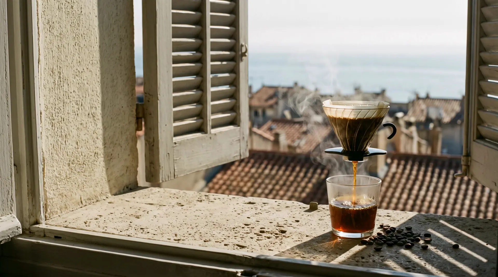
{{Métier · lieu}}
{{Réassurance courte : prix d'appel · délai · sans engagement}}
{{Manifeste, 2 à 3 phrases concrètes : ce que vous faites autrement, avec un chiffre ou un nom propre. Pas de « passion », pas d'« excellence ».}}
{{Prénom Nom, fonction}}
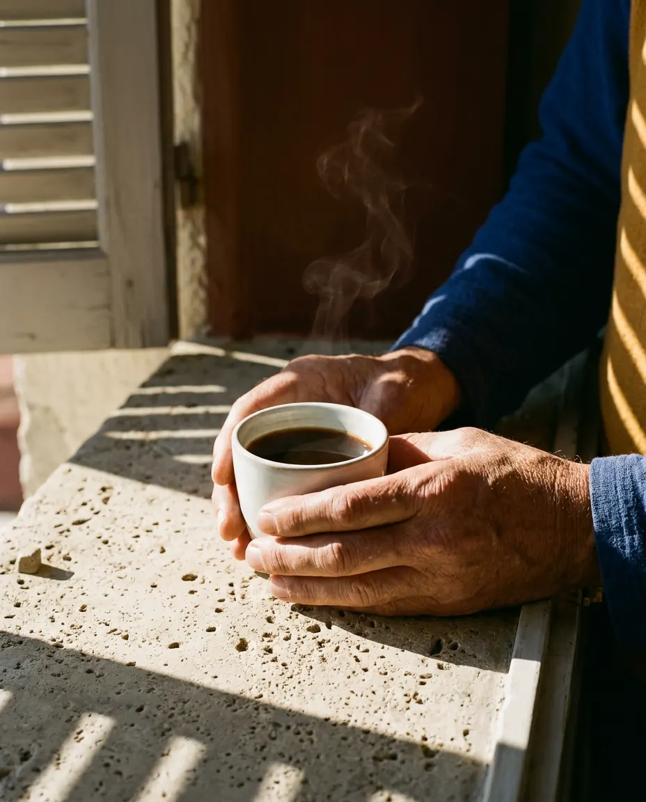
{{Étape 1 · quand}}
{{Ce qui se passe, concrètement, en deux phrases}}
{{Étape 2 · quand}}
{{Ce qui se passe, concrètement, en deux phrases}}
{{Étape 3 · quand}}
{{Ce qui se passe, concrètement, en deux phrases}}
{{Étape 4 · quand}}
{{Ce qui se passe, concrètement, en deux phrases}}
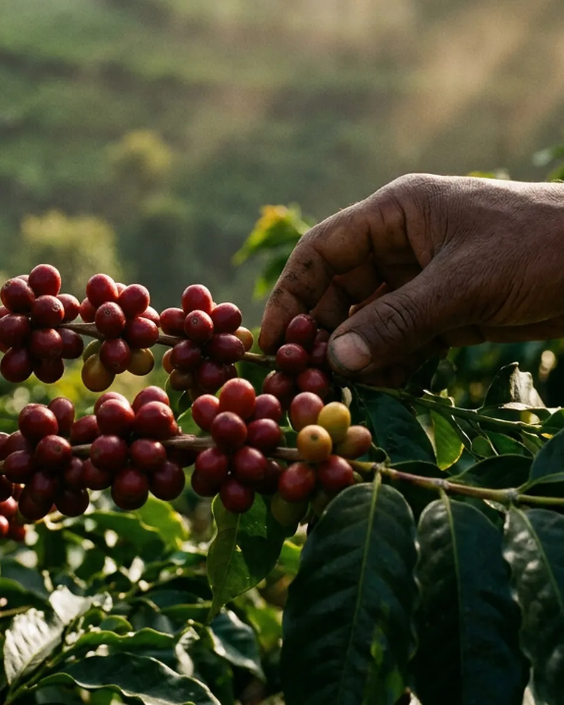
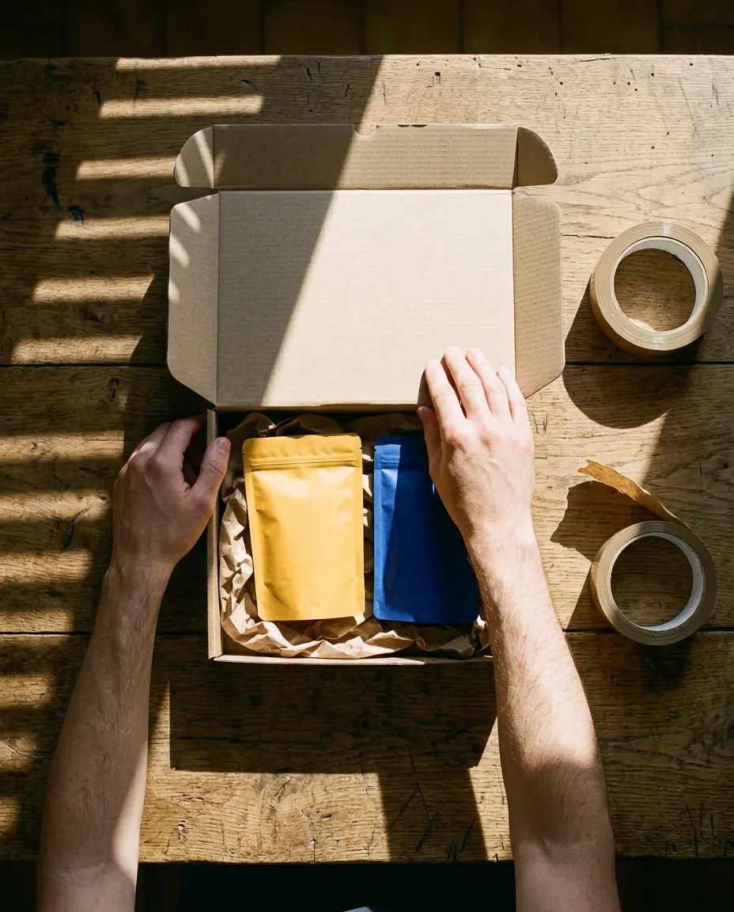
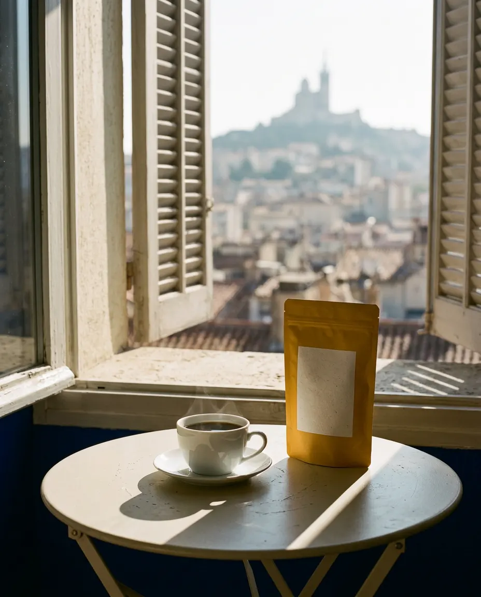
{{Ce qu'on voit ici, et pourquoi c'est différent}}
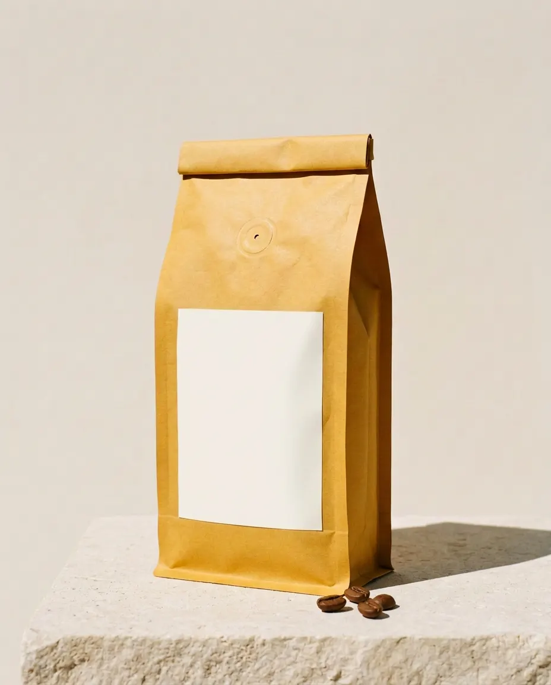
{{Détail 1}}
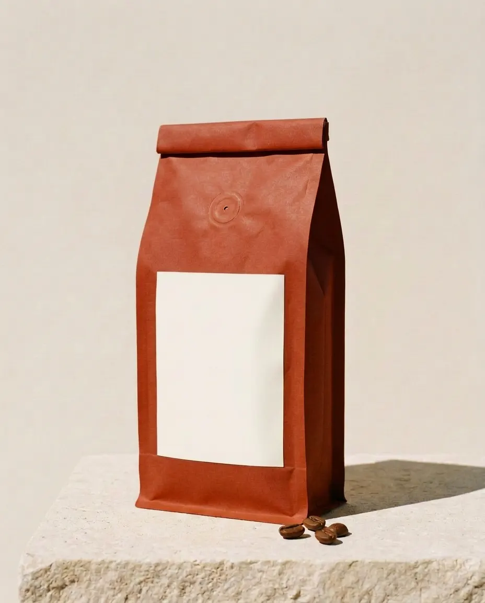
{{Détail 2}}
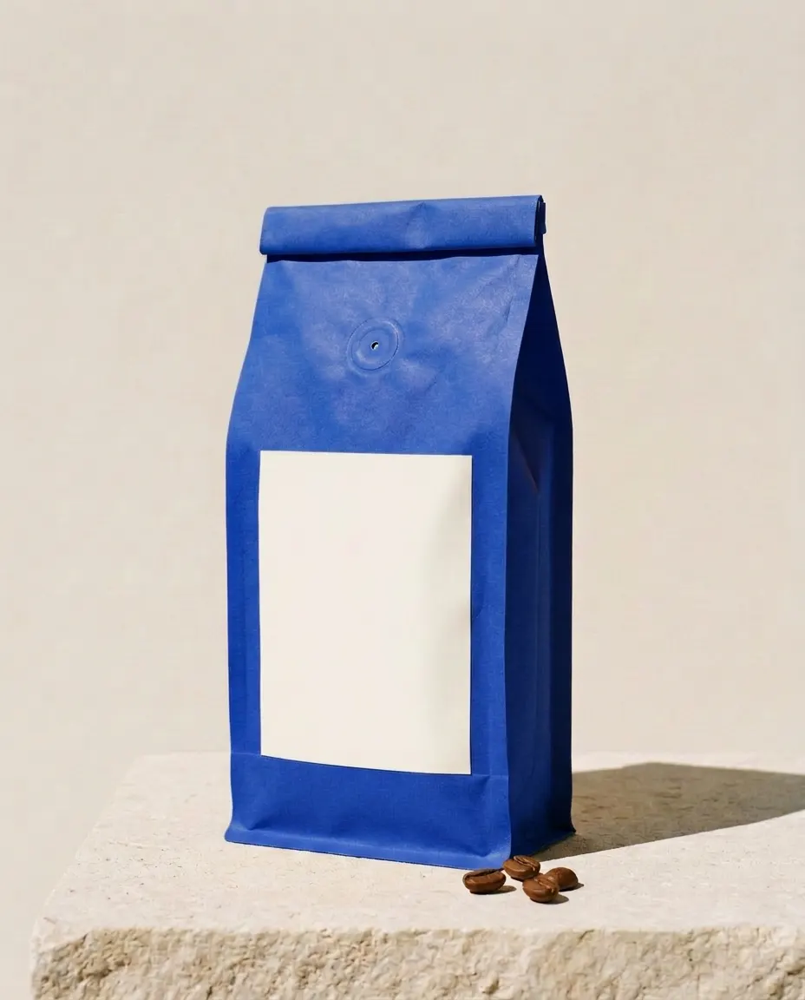
{{Détail 3}}
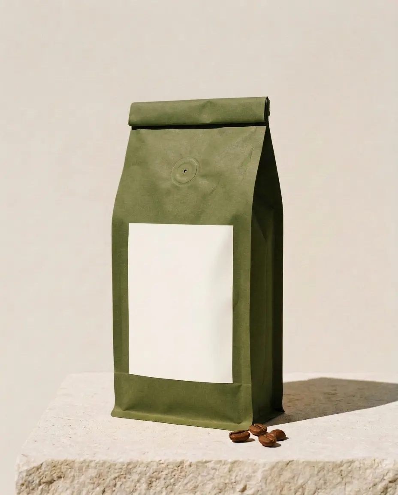
{{Détail 4}}
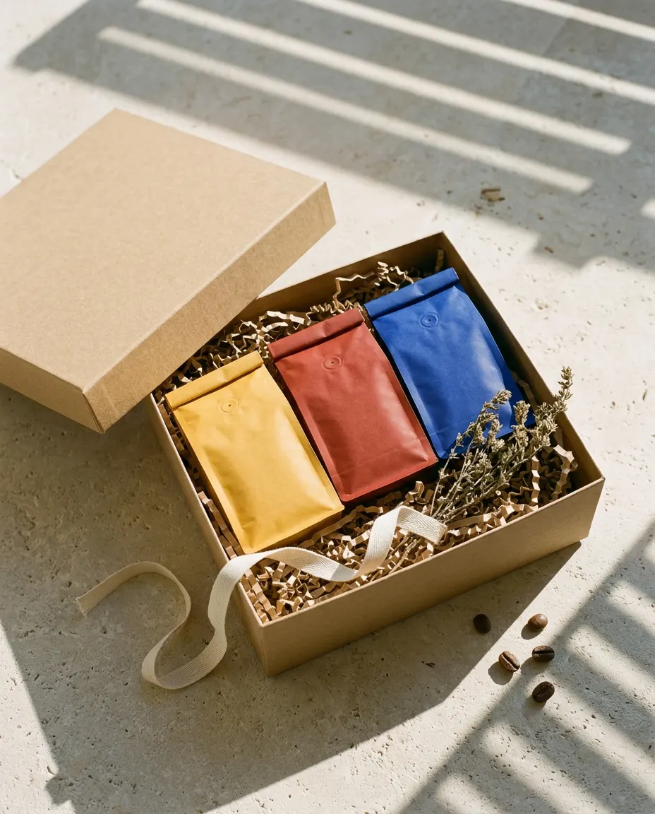
{{Détail 5}}
{{Deux phrases sur l'endroit : adresse, horaires, ce qu'on y voit}}
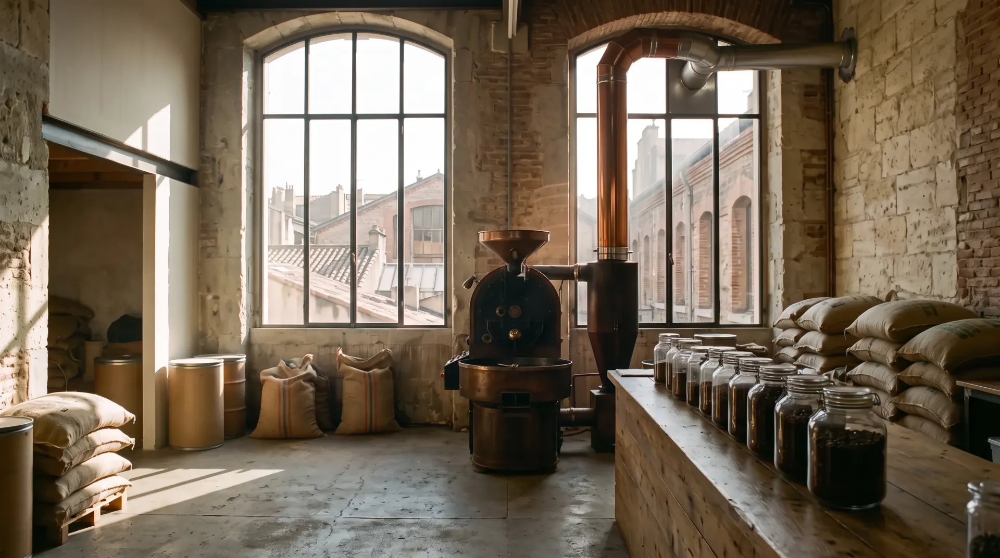
{{Avec Projet}}{{valeur A}}
{{L'alternative}}{{valeur B}}
{{Source du chiffre}}
« {{Avis précis : un fait, un détail, pas un adjectif}} »
« {{Deuxième avis, sur une autre objection}} »
{{Pour qui}}
12,50€ / mois
{{La plus choisie}}
{{Pour qui}}
19,90€ / mois
{{Conditions : engagement, livraison, résiliation}}
{{Une question de plus ? Comment nous joindre}}
{{Ce qui se passe juste après le clic}}